![]()
install.packages("dimensio")dimensio 0.3.0 is now on CRAN! dimensio provides a set of tools to compute, extract, summarize and visualize results of Principal Components Analysis (PCA) and Correspondence Analysis (CA) based on the Singular Value Decomposition (SVD). It also includes methods for partial bootstrap validation.
There are many very good packages for multivariate data analysis (such as FactoMineR, ade4, vegan or ca, all extended by FactoExtra). dimensio is designed to be as simple as possible, providing all the necessary tools to explore the results of the analysis.
You can install it from CRAN with:
This post highlights the basics of the package using the palmerpenguins dataset (Horst, Hill, and Gorman 2022).
Do PCA
## Load data
# install.packages("palmerpenguins")
data("penguins", package = "palmerpenguins")
head(penguins)# A tibble: 6 × 8
species island bill_length_mm bill_depth_mm flipper_l…¹ body_…² sex year
<fct> <fct> <dbl> <dbl> <int> <int> <fct> <int>
1 Adelie Torgersen 39.1 18.7 181 3750 male 2007
2 Adelie Torgersen 39.5 17.4 186 3800 fema… 2007
3 Adelie Torgersen 40.3 18 195 3250 fema… 2007
4 Adelie Torgersen NA NA NA NA <NA> 2007
5 Adelie Torgersen 36.7 19.3 193 3450 fema… 2007
6 Adelie Torgersen 39.3 20.6 190 3650 male 2007
# … with abbreviated variable names ¹flipper_length_mm, ²body_mass_g## Remove cases with missing values
penguins <- na.omit(penguins)
## Keep quantitative variables
## (i.e. column names ending with a unit)
end_with_unit <- grep("_mm|_g", colnames(penguins), value = TRUE)
quanti <- subset(penguins, select = end_with_unit)
## Compute PCA
## (non numeric variables are automatically removed)
X <- pca(quanti, center = TRUE, scale = TRUE)Explore the results
dimensio provides several methods to extract (get_*()) the results:
-
get_data()returns the original data. -
get_contributions()returns the contributions to the definition of the principal dimensions. -
get_coordinates()returns the principal or standard coordinates. -
get_correlations()returns the correlations between variables and dimensions. -
get_cos2()returns the cos2 values (i.e. the quality of the representation of the points on the factor map). -
get_eigenvalues()returns the eigenvalues, the percentages of variance and the cumulative percentages of variance.
The package also allows to quickly visualize (plot_*()) the results:
-
plot_rows()/plot_individuals()displays row/individual principal coordinates. -
plot_columns()/plot_variables()displays columns/variable principal coordinates. -
plot_contributions()displays (joint) contributions. -
plot_cos2()displays (joint) cos2. -
plot_variance()produces a scree plot.
dimensio uses ggplot2 (Wickham et al. 2022) for plotting information. Visualization methods produce graphics with as few elements as possible: this makes it easy to customize diagrams (e.g. using extra layers, themes and scales).
## Get eigenvalues
get_eigenvalues(X) eigenvalues variance cumulative
F1 2.7453557 70.536339 70.53634
F2 0.7781172 19.992140 90.52848
F3 0.3686425 9.471521 100.00000## Scree plot
plot_variance(X) +
ggplot2::geom_text(nudge_y = 2) + # Add labels
ggplot2::theme_bw() # Change theme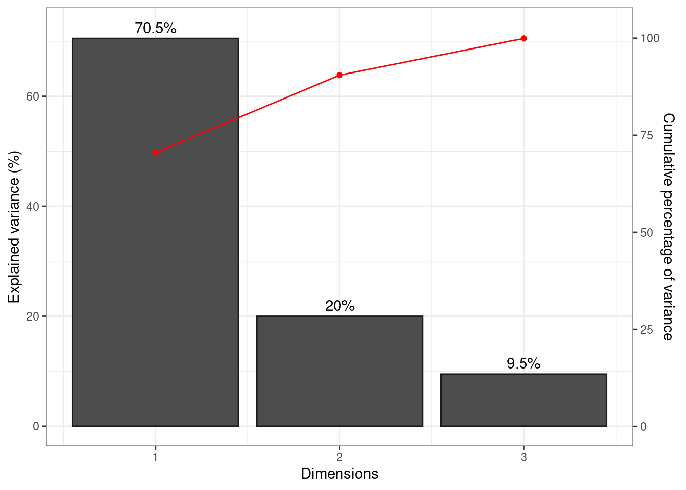
## Plot contribution of the variables to the definition of the first two axes
plot_contributions(X, margin = 2, axes = c(1, 2)) +
ggplot2::geom_text(nudge_y = 2) +
ggplot2::theme_bw()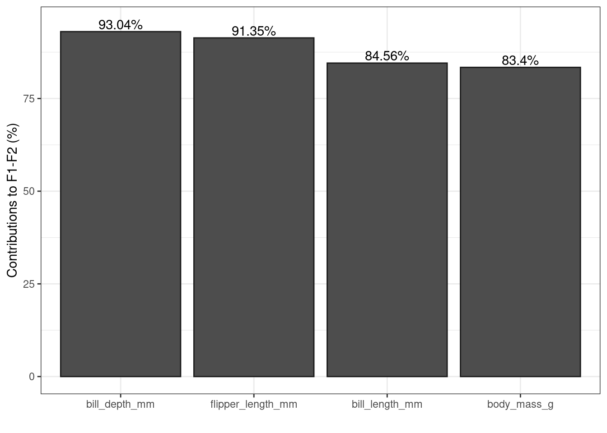
PCA biplot
A biplot is the simultaneous representation of rows and columns of a rectangular dataset. It is the generalization of a scatterplot to the case of mutlivariate data: it allows to visualize as much information as possible in a single graph (Greenacre 2010).
dimensio allows to display two types of biplots: a form biplot (row-metric-preserving biplot) or a covariance biplot (column-metric-preserving biplot). See Greenacre (2010) for more details about biplots.
The form biplot favors the representation of the individuals: the distance between the individuals approximates the Euclidean distance between rows. In the form biplot the length of a vector approximates the quality of the representation of the variable.
biplot(X, type = "form", label = "variables") +
ggrepel::geom_label_repel() + # Add repelling labels
ggplot2::theme_bw() +
ggplot2::theme(legend.position = "none") +
khroma::scale_colour_highcontrast() # Custom color scale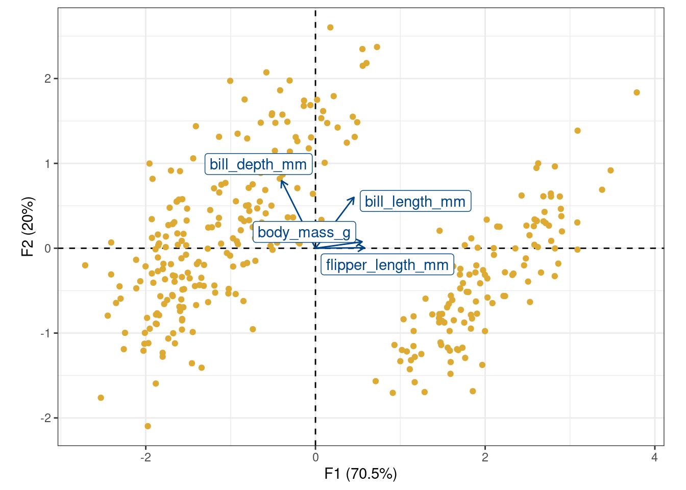
The covariance biplot favors the representation of the variables: the length of a vector approximates the standard deviation of the variable and the cosine of the angle formed by two vectors approximates the correlation between the two variables (Greenacre 2010). In the covariance biplot the distance between the individuals approximates the Mahalanobis distance between rows.
biplot(X, type = "covariance", label = "variables") +
ggrepel::geom_label_repel() + # Add repelling labels
ggplot2::theme_bw() +
ggplot2::theme(legend.position = "none") +
khroma::scale_colour_highcontrast() # Custom color scale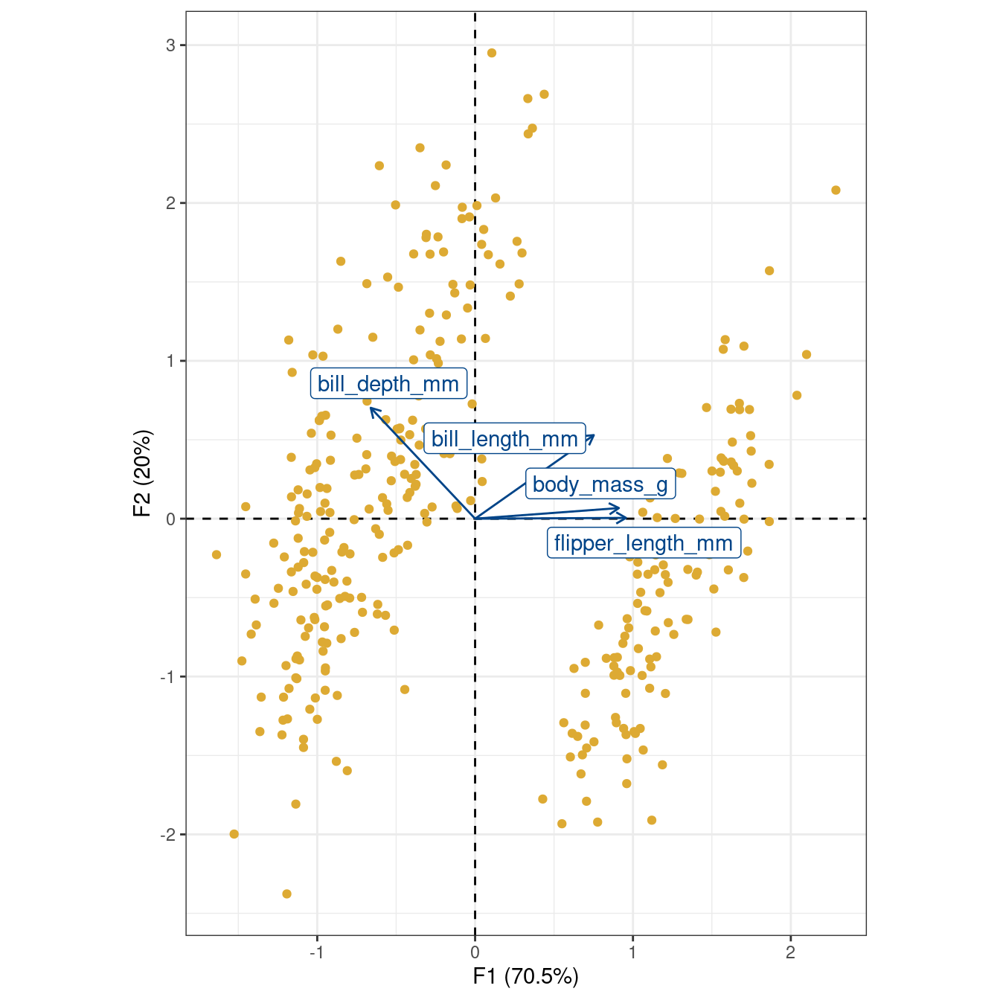
Biplots have the drawbacks of their advantages: they can quickly become difficult to read as they display a lot of information at once. It may then be preferable to visualize the results for individuals and variables separately.
Plot PCA loadings
plot_variables() depicts the variables by rays emanating from the origin (both their lengths and directions are important to the interpretation).
## Plot variables factor map
plot_variables(X) +
ggrepel::geom_label_repel() +
ggplot2::theme_bw()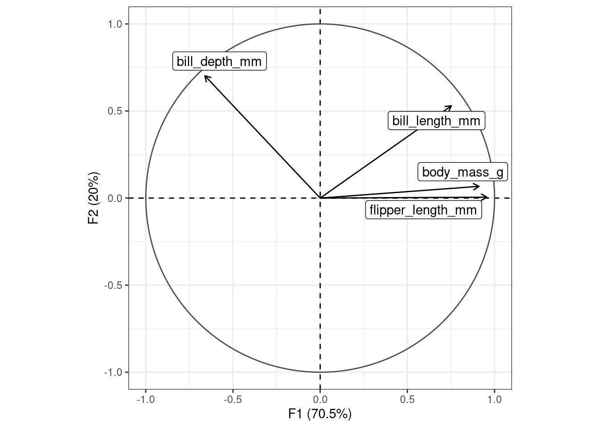
plot_variables() allows to highlight additional information by varying different graphical elements (color, transparency, shape and size of symbols…).
## Highlight cos2
plot_variables(X, colour = "cos2") +
ggrepel::geom_label_repel() +
ggplot2::theme_bw() +
khroma::scale_color_YlOrBr(range = c(0.4, 1))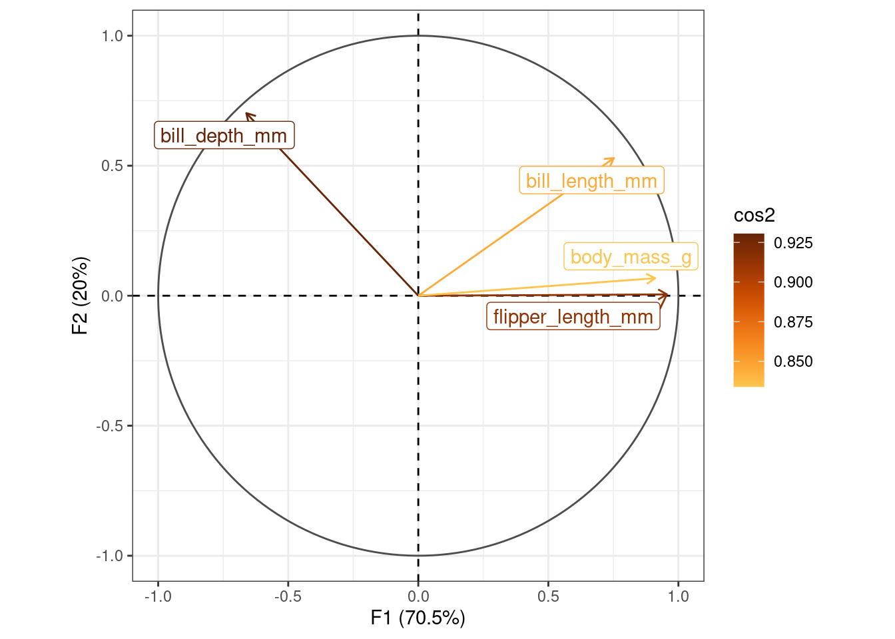
Plot PCA scores
plot_individuals() allows to display individuals and to highlight additional information.
## Plot individuals and colour by species
plot_individuals(X, colour = "group", group = penguins$species) +
ggplot2::stat_ellipse() + # Add ellipses
ggplot2::theme_bw() +
khroma::scale_colour_bright(name = "Species")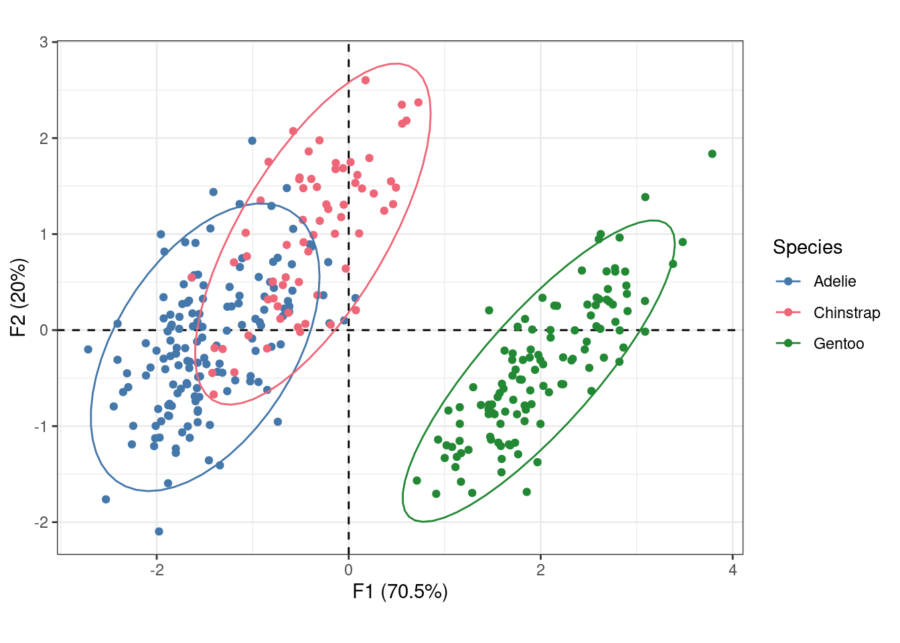
## Highlight body masses
plot_individuals(X, colour = "group", group = penguins$body_mass_g) +
ggplot2::theme_bw() +
khroma::scale_color_YlOrBr(name = "Body mass (g)")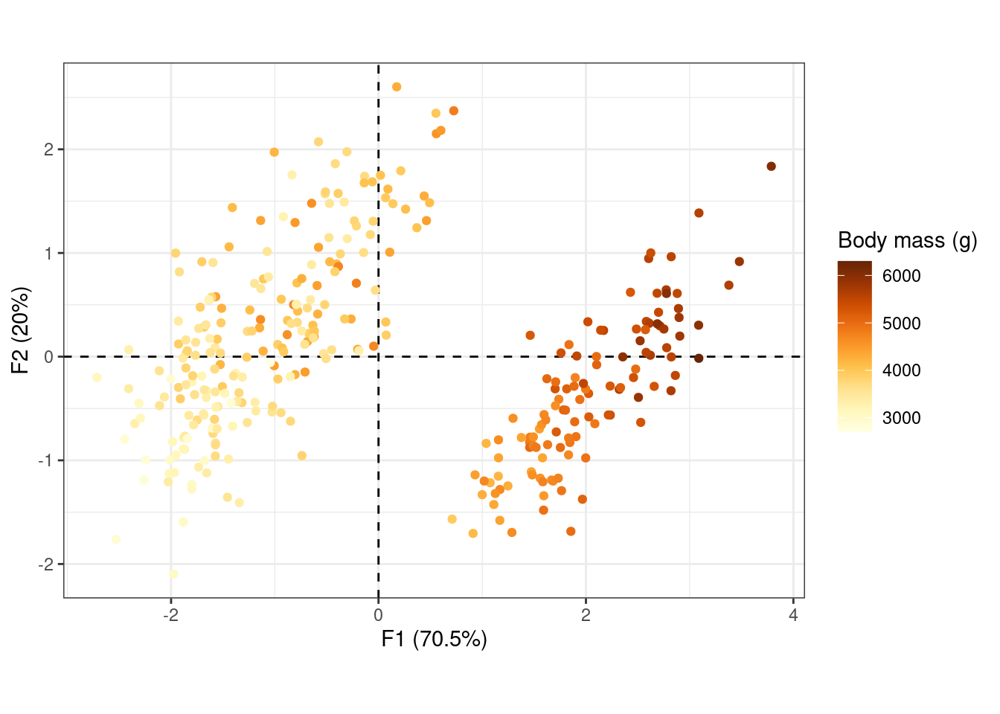
## Highlight contributions
plot_individuals(X, colour = "contrib", size = "contrib") +
ggplot2::theme_bw() + # Change theme
ggplot2::scale_size_continuous(range = c(1, 5)) + # Custom size scale
khroma::scale_color_iridescent()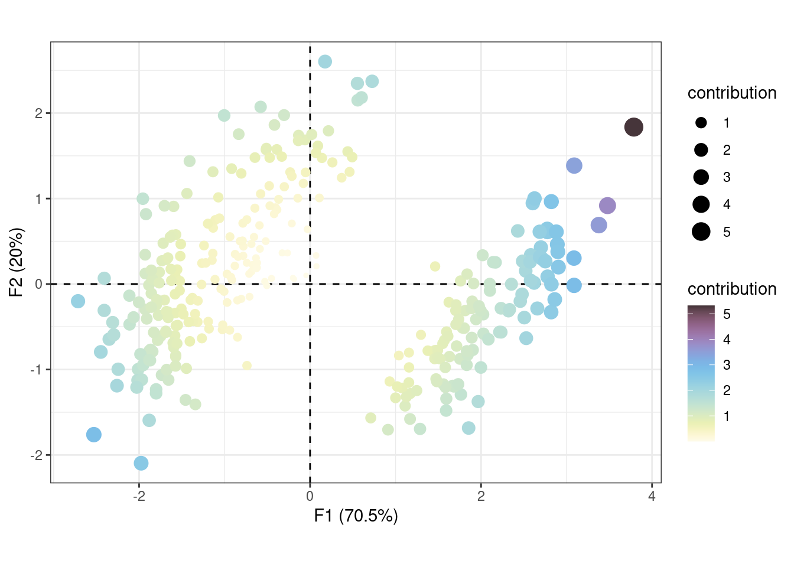
Custom plot
If you need more flexibility, the get_*() family and the tidy() and augment() functions allow you to extract the results as data frames and thus build custom graphs with base graphics or ggplot2.
penguins_tidy <- tidy(X, margin = 2)
head(penguins_tidy) label component supplementary coordinate contribution cos2
1 bill_depth_mm F1 FALSE -0.6611860 15.92387 0.4371669
2 bill_depth_mm F2 FALSE 0.7023087 63.38859 0.4932375
3 bill_depth_mm F3 FALSE 0.2585287 18.13060 0.0668371
4 bill_length_mm F1 FALSE 0.7518288 20.58919 0.5652466
5 bill_length_mm F2 FALSE 0.5294376 36.02339 0.2803042
6 bill_length_mm F3 FALSE -0.3900969 41.27999 0.1521756ggplot2::ggplot(data = penguins_tidy) +
ggplot2::aes(x = abs(coordinate), y = label, fill = coordinate > 0) +
ggplot2::geom_col() +
ggplot2::facet_wrap(. ~ component) +
ggplot2::theme_bw() +
ggplot2::theme(legend.position = "bottom") +
khroma::scale_fill_vibrant(name = "Positive loadings?", reverse = TRUE)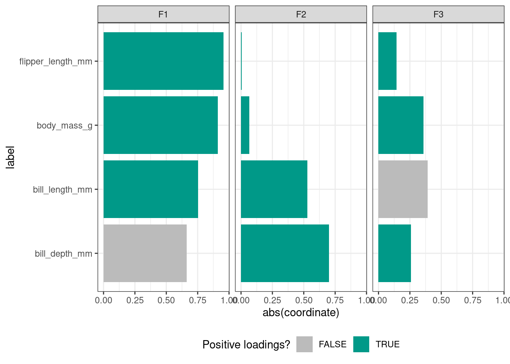
penguins_augment <- augment(X, margin = 1)
head(penguins_augment) F1 F2 label supplementary mass sum contribution
1 -1.853593 0.03206938 1 FALSE 0.003003003 3.436836 1.0320827
2 -1.316254 -0.44352677 2 FALSE 0.003003003 1.929241 0.5793516
3 -1.376605 -0.16123048 3 FALSE 0.003003003 1.921037 0.5768879
4 -1.885288 -0.01235124 4 FALSE 0.003003003 3.554465 1.0674069
5 -1.919981 0.81759813 5 FALSE 0.003003003 4.354793 1.3077456
6 -1.773020 -0.36622296 6 FALSE 0.003003003 3.277720 0.9843004
cos2
1 0.9113332
2 0.9224728
3 0.8589470
4 0.8516598
5 0.8914904
6 0.9275007ggplot2::ggplot(data = penguins_augment) +
ggplot2::aes(x = F1, y = F2, colour = contribution) +
ggplot2::geom_vline(xintercept = 0, size = 0.5, linetype = "dashed") +
ggplot2::geom_hline(yintercept = 0, size = 0.5, linetype = "dashed") +
ggplot2::geom_point() +
ggplot2::coord_fixed() + # /!\
ggplot2::theme_bw() +
khroma::scale_color_iridescent()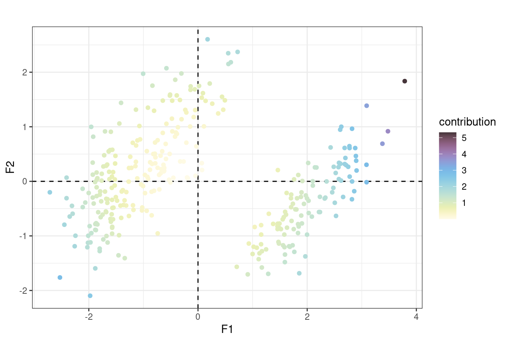
References
Frerebeau, Nicolas. 2022a. Dimensio: Multivariate Data Analysis. https://CRAN.R-project.org/package=dimensio.
———. 2022b. Khroma: Colour Schemes for Scientific Data Visualization. https://CRAN.R-project.org/package=khroma.
Greenacre, Michael J. 2010. Biplots in Practice. Bilbao: Fundación BBVA.
Horst, Allison, Alison Hill, and Kristen Gorman. 2022. Palmerpenguins: Palmer Archipelago (Antarctica) Penguin Data. https://CRAN.R-project.org/package=palmerpenguins.
Slowikowski, Kamil. 2021. Ggrepel: Automatically Position Non-Overlapping Text Labels with Ggplot2. https://github.com/slowkow/ggrepel.
Wickham, Hadley, Winston Chang, Lionel Henry, Thomas Lin Pedersen, Kohske Takahashi, Claus Wilke, Kara Woo, Hiroaki Yutani, and Dewey Dunnington. 2022. Ggplot2: Create Elegant Data Visualisations Using the Grammar of Graphics. https://CRAN.R-project.org/package=ggplot2.
Reuse
Citation
BibTeX citation:
@online{frerebeau2022,
author = {Nicolas Frerebeau},
title = {Dimensio 0.3.0},
date = {2022-08-15},
url = {https://www.tesselle.org/posts/2022-08-15-dimensio-030},
langid = {en}
}
For attribution, please cite this work as:
Nicolas Frerebeau. 2022. “Dimensio 0.3.0.” August 15, 2022.
https://www.tesselle.org/posts/2022-08-15-dimensio-030.